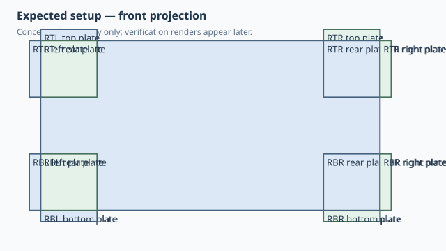

Forge model example
Eight flightcase corner protectors
What this example makes
Each of the eight case corners is wrapped by three connected plates: one horizontal and two vertical. The protector outer envelope is a fixed 24x24x24 mm at every corner.


Forge code
This is the complete Forge source used for this example.
"""Eight trihedral flightcase corner protectors around one rounded case."""
class CaseBlock:
_width = 120.0
_depth = 80.0
_height = 60.0
def build(self):
return Box(
self._width,
self._depth,
self._height,
anchor=Anchor.BOTTOM,
).fillet(8, edges=Edges.VERTICAL)
class FlightcaseCorner:
# Fixed representative dimensions for this orientation qualification.
# These values intentionally do not depend on CaseBlock dimensions.
ARM = 20.0
THICKNESS = 4.0
OVERLAP = 0.5
def build(self):
arm = self.ARM
t = self.THICKNESS
overlap = self.OVERLAP
# Neutral protector for a bottom/front/left corner.
# The case interior is local +X/+Y/+Z; the three plates sit outside
# the bottom, front and left faces and overlap slightly inside the cap.
bottom = Box(arm, arm, t).move(
x=half(arm),
y=half(arm),
z=-half(t),
)
front = Box(arm, t + overlap, arm + overlap).move(
x=half(arm),
y=half(overlap - t),
z=half(arm - overlap),
)
side = Box(t + overlap, arm, arm + overlap).move(
x=half(overlap - t),
y=half(arm),
z=half(arm - overlap),
)
return bottom + front + side
class EightFlightcaseCorners:
case_width = 120.0
case_depth = 80.0
case_height = 60.0
def build(self):
case = CaseBlock(
_width=self.case_width,
_depth=self.case_depth,
_height=self.case_height,
)
protector = FlightcaseCorner()
half_width = half(self.case_width)
half_depth = half(self.case_depth)
def placed(x, y, z, rotation=None):
return protector.copy(
placement=Placement(
x=x,
y=y,
z=z,
rotation=rotation,
),
)
front_bottom_left = placed(-half_width, -half_depth, 0)
front_bottom_right = placed(
half_width, -half_depth, 0, (Z, 90),
)
rear_bottom_right = placed(
half_width, half_depth, 0, (Z, 180),
)
rear_bottom_left = placed(
-half_width, half_depth, 0, (Z, 270),
)
front_top_left = placed(
-half_width,
-half_depth,
self.case_height,
((1, 1, 0), 180),
)
front_top_right = placed(
half_width,
-half_depth,
self.case_height,
(Y, 180),
)
rear_top_right = placed(
half_width,
half_depth,
self.case_height,
((1, -1, 0), 180),
)
rear_top_left = placed(
-half_width,
half_depth,
self.case_height,
(X, 180),
)
return (
case
+ front_bottom_left + front_bottom_right
+ rear_bottom_right + rear_bottom_left
+ front_top_left + front_top_right
+ rear_top_right + rear_top_left
)
EightFlightcaseCorners()
API used
FlightcaseCorner.copy(placement=Placement(x=..., y=..., z=..., rotation=(axis, angle)))
Reference code
The same model is written independently with the reference libraries below. This makes it easier to compare modelling style and the resulting shape.
PythonSCAD
"""PythonSCAD reference: eight 20 mm trihedral protectors around a rounded case.
The sx/sy signs identify which outside face the corner touches. The protector
arms grow inward from that case corner while only their 4 mm plate thickness
extends outward. This matches the Forge component geometry without modelling
its reusable attachment frames.
"""
from pythonscad import *
case = cube([120, 80, 60], center="00-").fillet(8)
def box_bounds(lo, hi):
size = [hi[i] - lo[i] for i in range(3)]
center = [(hi[i] + lo[i]) / 2 for i in range(3)]
return cube(size, center=True).translate(center)
def protector(x, y, z, sx, sy, sz):
# sx/sy point outward; the 20 mm arms therefore extend in -sx/-sy.
xi = x - sx * 20
yi = y - sy * 20
zi = z + sz * 20
x0, x1 = sorted([x, xi])
y0, y1 = sorted([y, yi])
z0, z1 = sorted([z, zi])
cap = box_bounds(
[x0, y0, z - 4 if sz > 0 else z],
[x1, y1, z if sz > 0 else z + 4],
)
front = box_bounds(
[x0, min(y, y + sy * 4), z0],
[x1, max(y, y + sy * 4), z1],
)
side = box_bounds(
[min(x, x + sx * 4), y0, z0],
[max(x, x + sx * 4), y1, z1],
)
return cap | front | side
model = case
for x, y, z, sx, sy, sz in [
(-60, -40, 0, -1, -1, 1), (60, -40, 0, 1, -1, 1),
(60, 40, 0, 1, 1, 1), (-60, 40, 0, -1, 1, 1),
(-60, -40, 60, -1, -1, -1), (60, -40, 60, 1, -1, -1),
(60, 40, 60, 1, 1, -1), (-60, 40, 60, -1, 1, -1),
]:
model = model | protector(x, y, z, sx, sy, sz)

Reference result checks · PASS · 1/1 passed
| Check | Status | Expected | Measured | Detail |
|---|---|---|---|---|
| bounds | PASS | {'min': [-64.0, -44.0, -4.0], 'max': [64.0, 44.0, 64.0]} | {'min': [-64.0, -44.0, -4.0], 'max': [64.0, 44.0, 64.0]} | max difference 0.0 mm; allowed 0.5 mm |
pyBOSL2
"""pyBOSL2 geometry reference: eight 20 mm trihedral flightcase protectors.
The sx/sy signs identify the outside case faces. Each 20 mm arm grows inward;
only the 4 mm plate thickness projects outside. Forge additionally qualifies
reusable component orientation frames and native attachment relationships.
"""
from pybosl2 import Anchor, cuboid
case = cuboid(
[120, 80, 60],
rounding=8,
edges=Anchor.Z,
anchor=Anchor.BOTTOM,
)
def box_bounds(lo, hi):
size = [hi[i] - lo[i] for i in range(3)]
center = [(hi[i] + lo[i]) / 2 for i in range(3)]
return cuboid(size).translate(center)
def protector(x, y, z, sx, sy, sz):
xi = x - sx * 20
yi = y - sy * 20
zi = z + sz * 20
x0, x1 = sorted([x, xi])
y0, y1 = sorted([y, yi])
z0, z1 = sorted([z, zi])
cap = box_bounds(
[x0, y0, z - 4 if sz > 0 else z],
[x1, y1, z if sz > 0 else z + 4],
)
front = box_bounds(
[x0, min(y, y + sy * 4), z0],
[x1, max(y, y + sy * 4), z1],
)
side = box_bounds(
[min(x, x + sx * 4), y0, z0],
[max(x, x + sx * 4), y1, z1],
)
return cap | front | side
model = case
for x, y, z, sx, sy, sz in [
(-60, -40, 0, -1, -1, 1), (60, -40, 0, 1, -1, 1),
(60, 40, 0, 1, 1, 1), (-60, 40, 0, -1, 1, 1),
(-60, -40, 60, -1, -1, -1), (60, -40, 60, 1, -1, -1),
(60, 40, 60, 1, 1, -1), (-60, 40, 60, -1, 1, -1),
]:
model = model | protector(x, y, z, sx, sy, sz)

Reference result checks · PASS · 1/1 passed
| Check | Status | Expected | Measured | Detail |
|---|---|---|---|---|
| bounds | PASS | {'min': [-64.0, -44.0, -4.0], 'max': [64.0, 44.0, 64.0]} | {'min': [-64.0, -44.0, -4.0], 'max': [64.0, 44.0, 64.0]} | max difference 0.0 mm; allowed 0.5 mm |
CadQuery
"""CadQuery reference for eight trihedral flightcase corner protectors."""
import cadquery as cq
def box_bounds(lo, hi):
return cq.Solid.makeBox(
hi[0] - lo[0],
hi[1] - lo[1],
hi[2] - lo[2],
cq.Vector(lo[0], lo[1], lo[2]),
)
def protector(x, y, z, sx, sy, sz):
xi = x - sx * 20
yi = y - sy * 20
zi = z + sz * 20
x0, x1 = sorted([x, xi])
y0, y1 = sorted([y, yi])
z0, z1 = sorted([z, zi])
cap = box_bounds(
[x0, y0, z - 4 if sz > 0 else z],
[x1, y1, z if sz > 0 else z + 4],
)
front = box_bounds(
[x0, min(y, y + sy * 4), z0],
[x1, max(y, y + sy * 4), z1],
)
side = box_bounds(
[min(x, x + sx * 4), y0, z0],
[max(x, x + sx * 4), y1, z1],
)
return cap.fuse(front).fuse(side)
case = (
cq.Workplane("XY")
.box(120, 80, 60, centered=(True, True, False))
.edges("|Z")
.fillet(8)
.val()
)
model = cq.Assembly()
model.add(case, name="case")
for index, values in enumerate([
(-60, -40, 0, -1, -1, 1),
(60, -40, 0, 1, -1, 1),
(60, 40, 0, 1, 1, 1),
(-60, 40, 0, -1, 1, 1),
(-60, -40, 60, -1, -1, -1),
(60, -40, 60, 1, -1, -1),
(60, 40, 60, 1, 1, -1),
(-60, 40, 60, -1, 1, -1),
]):
model.add(protector(*values), name=f"protector_{index}")

Reference result checks · PASS · 1/1 passed
| Check | Status | Expected | Measured | Detail |
|---|---|---|---|---|
| bounds | PASS | {'min': [-64.0, -44.0, -4.0], 'max': [64.0, 44.0, 64.0]} | {'min': [-64.0, -44.0, -4.0], 'max': [64.0, 44.0, 64.0]} | max difference 0.0 mm; allowed 0.5 mm |
build123d
"""build123d reference: eight reusable trihedral corner protectors."""
from build123d import (
Align,
Axis,
BasePartObject,
Box,
BuildPart,
Locations,
Mode,
fillet,
)
class FlightCaseCorner(BasePartObject):
"""Reusable corner protector built in local coordinates."""
def __init__(self, sx, sy, sz, mode=Mode.ADD):
def box_bounds(lo, hi):
size = [hi[i] - lo[i] for i in range(3)]
center = [(lo[i] + hi[i]) / 2 for i in range(3)]
with Locations(tuple(center)):
Box(*size)
xi, yi, zi = -sx * 20, -sy * 20, sz * 20
x0, x1 = sorted((0, xi))
y0, y1 = sorted((0, yi))
z0, z1 = sorted((0, zi))
with BuildPart() as corner:
box_bounds(
(x0, y0, -4 if sz > 0 else 0),
(x1, y1, 0 if sz > 0 else 4),
)
box_bounds(
(x0, min(0, sy * 4), z0),
(x1, max(0, sy * 4), z1),
)
box_bounds(
(min(0, sx * 4), y0, z0),
(max(0, sx * 4), y1, z1),
)
super().__init__(part=corner.part, mode=mode)
bottom = (Align.CENTER, Align.CENTER, Align.MIN)
with BuildPart() as model:
Box(120, 80, 60, align=bottom)
fillet(model.edges().filter_by(Axis.Z), radius=8)
for x, y, z, sx, sy, sz in [
(-60, -40, 0, -1, -1, 1),
(60, -40, 0, 1, -1, 1),
(60, 40, 0, 1, 1, 1),
(-60, 40, 0, -1, 1, 1),
(-60, -40, 60, -1, -1, -1),
(60, -40, 60, 1, -1, -1),
(60, 40, 60, 1, 1, -1),
(-60, 40, 60, -1, 1, -1),
]:
with Locations((x, y, z)):
FlightCaseCorner(sx, sy, sz)

Reference result checks · PASS · 1/1 passed
| Check | Status | Expected | Measured | Detail |
|---|---|---|---|---|
| bounds | PASS | {'min': [-64.0, -44.0, -4.0], 'max': [64.0, 44.0, 64.0]} | {'min': [-64.0, -44.0, -4.0], 'max': [64.0, 44.0, 64.0]} | max difference 0.0 mm; allowed 0.5 mm |
How Forge builds it in SolidCraft
Forge binds the occurrence ids returned by component.create/occurrence.copy to replay variables. Numeric unrotated copies use occurrence.copy translate directly; symbolic positions and rotations use a later occurrence.move addressed by the bound id.
Show generated SolidCraft commands
parameters.add
parameters.add
parameters.add
component.create
solid.box
solid.fillet
component.activate
component.create
solid.box
solid.box
solid.box
component.activate
occurrence.copy
occurrence.copy
occurrence.copy
occurrence.copy
occurrence.copy
occurrence.copy
occurrence.copy
occurrence.move
occurrence.move
occurrence.move
occurrence.move
occurrence.move
occurrence.move
occurrence.move
occurrence.moveSolidCraft result
Built and measured with SolidCraft 0.42.0. Open the measurement details to inspect body sizes and editable parameters.
size 160x120x90 · 9 bodies
Editable parameters
| Name | Value |
|---|---|
case_width | 160.0 |
case_depth | 120.0 |
case_height | 90.0 |
Body size
| Body | Minimum | Maximum |
|---|---|---|
| CaseBlock | [-80, -60, 0] | [80, 60, 90] |
| FlightcaseCorner | [-84, -64, -4] | [-60, -40, 20] |
| FlightcaseCorner (FlightcaseCorner:2) | [60, -64, -4] | [84, -40, 20] |
| FlightcaseCorner (FlightcaseCorner:3) | [60, 40, -4] | [84, 64, 20] |
| FlightcaseCorner (FlightcaseCorner:4) | [-84, 40, -4] | [-60, 64, 20] |
| FlightcaseCorner (FlightcaseCorner:5) | [-84, -64, 70] | [-60, -40, 94] |
| FlightcaseCorner (FlightcaseCorner:6) | [60, -64, 70] | [84, -40, 94] |
| FlightcaseCorner (FlightcaseCorner:7) | [60, 40, 70] | [84, 64, 94] |
| FlightcaseCorner (FlightcaseCorner:8) | [-84, 40, 70] | [-60, 64, 94] |
Original model · 9 bodies
Editable parameters
| Name | Value |
|---|---|
case_width | 120.0 |
case_depth | 80.0 |
case_height | 60.0 |
Body size
| Body | Minimum | Maximum |
|---|---|---|
| CaseBlock | [-60, -40, 0] | [60, 40, 60] |
| FlightcaseCorner | [-64, -44, -4] | [-40, -20, 20] |
| FlightcaseCorner (FlightcaseCorner:2) | [40, -44, -4] | [64, -20, 20] |
| FlightcaseCorner (FlightcaseCorner:3) | [40, 20, -4] | [64, 44, 20] |
| FlightcaseCorner (FlightcaseCorner:4) | [-64, 20, -4] | [-40, 44, 20] |
| FlightcaseCorner (FlightcaseCorner:5) | [-64, -44, 40] | [-40, -20, 64] |
| FlightcaseCorner (FlightcaseCorner:6) | [40, -44, 40] | [64, -20, 64] |
| FlightcaseCorner (FlightcaseCorner:7) | [40, 20, 40] | [64, 44, 64] |
| FlightcaseCorner (FlightcaseCorner:8) | [-64, 20, 40] | [-40, 44, 64] |
Semantic validation · PASS · 7/7 checks passed
| Status | Level | Check | Expected | Actual |
|---|---|---|---|---|
| PASS | Q4 | declared target geometry | [{"label": "CaseBlock", "min": [-60, -40, 0], "max": [60, 40, 60]}, {"label": "front bottom-left", "min": [-64, -44, -4], "max": [-40, -20, 20]}, {"label": "front bottom-right", "min": [40, -44, -4], "max": [64, -20, 20]}, {"label": "rear bottom-right", "min": [40, 20, -4], "max": [64, 44, 20]}, {"label": "rear bottom-left", "min": [-64, 20, -4], "max": [-40, 44, 20]}, {"label": "front top-left", "min": [-64, -44, 40], "max": [-40, -20, 64]}, {"label": "front top-right", "min": [40, -44, 40], "max": [64, -20, 64]}, {"label": "rear top-right", "min": [40, 20, 40], "max": [64, 44, 64]}, {"label": "rear top-left", "min": [-64, 20, 40], "max": [-40, 44, 64]}] | [{"min": [-60.0, -40.0, 0.0], "max": [60.0, 40.0, 60.0]}, {"min": [-64.0, -44.0, -4.0], "max": [-40.0, -20.0, 20.0]}, {"min": [40.0, -44.0, -4.0], "max": [64.0, -20.0, 20.0]}, {"min": [40.0, 20.0, -4.0], "max": [64.0, 44.0, 20.0]}, {"min": [-64.0, 19.999999999999996, -4.0], "max": [-40.0, 44.0, 20.0]}, {"min": [-64.0, -44.00000000000001, 40.0], "max": [-40.0, -20.000000000000004, 64.0]}, {"min": [40.0, -44.0, 40.0], "max": [64.0, -20.0, 64.0]}, {"min": [40.0, 20.0, 40.0], "max": [64.0, 44.0, 64.0]}, {"min": [-64.0, 19.999999999999996, 40.0], "max": [-40.0, 44.0, 64.0]}] |
| PASS | Q4 | nine bodies: case plus eight flightcase corners | 9 | 9 |
| PASS | Q4 | eight fixed 24x24x24 protector envelopes | [[24.0, 24.0, 24.0], [24.0, 24.0, 24.0], [24.0, 24.0, 24.0], [24.0, 24.0, 24.0], [24.0, 24.0, 24.0], [24.0, 24.0, 24.0], [24.0, 24.0, 24.0], [24.0, 24.0, 24.0]] | [[24.0, 24.0, 24.0], [24.0, 24.0, 24.0], [24.0, 24.0, 24.0], [24.0, 24.0, 24.0], [24.0, 24.0, 24.0], [24.0, 24.0, 24.0], [24.0, 24.0, 24.0], [24.0, 24.0, 24.0]] |
| PASS | Q5 | declared mutation target geometry | [{"label": "CaseBlock", "min": [-80, -60, 0], "max": [80, 60, 90]}, {"label": "front bottom-left", "min": [-84, -64, -4], "max": [-60, -40, 20]}, {"label": "front bottom-right", "min": [60, -64, -4], "max": [84, -40, 20]}, {"label": "rear bottom-right", "min": [60, 40, -4], "max": [84, 64, 20]}, {"label": "rear bottom-left", "min": [-84, 40, -4], "max": [-60, 64, 20]}, {"label": "front top-left", "min": [-84, -64, 70], "max": [-60, -40, 94]}, {"label": "front top-right", "min": [60, -64, 70], "max": [84, -40, 94]}, {"label": "rear top-right", "min": [60, 40, 70], "max": [84, 64, 94]}, {"label": "rear top-left", "min": [-84, 40, 70], "max": [-60, 64, 94]}] | [{"min": [-80.0, -60.0, 0.0], "max": [80.0, 60.0, 90.0]}, {"min": [-84.0, -64.0, -4.0], "max": [-60.0, -40.0, 20.0]}, {"min": [60.0, -64.0, -4.0], "max": [84.0, -40.0, 20.0]}, {"min": [60.0, 40.0, -4.0], "max": [84.0, 64.0, 20.0]}, {"min": [-84.0, 40.0, -4.0], "max": [-60.0, 64.0, 20.0]}, {"min": [-84.0, -64.0, 70.0], "max": [-60.0, -40.0, 94.0]}, {"min": [60.0, -64.0, 70.0], "max": [84.0, -40.0, 94.0]}, {"min": [60.0, 40.0, 70.0], "max": [84.0, 64.0, 94.0]}, {"min": [-84.0, 40.0, 70.0], "max": [-60.0, 64.0, 94.0]}] |
| PASS | Q5 | nine bodies after saved-design mutation | 9 | 9 |
| PASS | Q5 | case dimensions changed | {"case_width": 160.0, "case_depth": 120.0, "case_height": 90.0} | {"case_width": 160.0, "case_depth": 120.0, "case_height": 90.0} |
| PASS | Q5 | protector envelopes remain fixed after parent resize | [[24.0, 24.0, 24.0], [24.0, 24.0, 24.0], [24.0, 24.0, 24.0], [24.0, 24.0, 24.0], [24.0, 24.0, 24.0], [24.0, 24.0, 24.0], [24.0, 24.0, 24.0], [24.0, 24.0, 24.0]] | [[24.0, 24.0, 24.0], [24.0, 24.0, 24.0], [24.0, 24.0, 24.0], [24.0, 24.0, 24.0], [24.0, 24.0, 24.0], [24.0, 24.0, 24.0], [24.0, 24.0, 24.0], [24.0, 24.0, 24.0]] |
Visual result
Actual is the SolidCraft render. Goal shows the expected shape. Overlay places both on top of each other so differences are easy to see.
Iso
Current SolidCraft iso view

Expected geometry in the same iso view

Expected geometry over the actual iso view
Front

Current SolidCraft front view

Expected geometry in the same front view

Expected geometry over the actual front view
Right

Current SolidCraft right view

Expected geometry in the same right view

Expected geometry over the actual right view
Technical test details
Q1 and Q2 tests
These are the exact automated tests used for this example.
- Q1 PASS
- Q2 PASS
Geometry checks
These are the sizes and measurement points used by the automated checks.
| Body | Minimum | Maximum |
|---|---|---|
| CaseBlock | [-60, -40, 0] | [60, 40, 60] |
| front bottom-left | [-64, -44, -4] | [-40, -20, 20] |
| front bottom-right | [40, -44, -4] | [64, -20, 20] |
| rear bottom-right | [40, 20, -4] | [64, 44, 20] |
| rear bottom-left | [-64, 20, -4] | [-40, 44, 20] |
| front top-left | [-64, -44, 40] | [-40, -20, 64] |
| front top-right | [40, -44, 40] | [64, -20, 64] |
| rear top-right | [40, 20, 40] | [64, 44, 64] |
| rear top-left | [-64, 20, 40] | [-40, 44, 64] |
- Is the size check enough for this model? Yes — This case qualifies eight corner placements around the case. Per-occurrence bounds and the visual decomposition describe this case's placement geometry; native relationships are checked separately.
- Views checked: iso, front, right
Saved-design test
Checked in the saved model. Change case_width/depth/height from 120x80x60 to 160x120x90 mm; all protectors follow the calculated corner positions without rerunning Python, while every protector remains exactly 24x24x24 mm.
Raw test files
- Forge fixture source
- PythonSCAD reference source
- pyBOSL2 reference source
- CadQuery reference source
- build123d reference source
- Generated command JSON in build output
- results.json
- measurements-size-160x120x90.json
- measurements.json
- joint-inspect.json
- model-size-160x120x90.sc
- model.sc
- model.step
- qualification-result.json
- validation.json
- visual-validation.json
- camera-front.json
- camera-iso.json
- camera-right.json
- q1-case-evidence.txt
- q2-case-evidence.txt
- Native snapshot: model.png
- Native snapshot: model-front.png
- Native snapshot: goal-front.png
- Native snapshot: overlay-front.png
- Native snapshot: visual-diff-front.png
- Native snapshot: model-right.png
- Native snapshot: goal-right.png
- Native snapshot: overlay-right.png
- Native snapshot: visual-diff-right.png
- Native snapshot: model-iso.png
- Native snapshot: goal-iso.png
- Native snapshot: overlay-iso.png
- Native snapshot: visual-diff-iso.png
- Reference evidence: reference-pythonscad/result.json
- Reference evidence: reference-pythonscad/model.stl
- Reference evidence: reference-pythonscad/model-front.png
- Reference evidence: reference-pythonscad/model-right.png
- Reference evidence: reference-pythonscad/model-iso.png
- Reference evidence: reference-pybosl2/result.json
- Reference evidence: reference-pybosl2/model.stl
- Reference evidence: reference-pybosl2/model-front.png
- Reference evidence: reference-pybosl2/model-right.png
- Reference evidence: reference-pybosl2/model-iso.png
- Reference evidence: reference-cadquery/result.json
- Reference evidence: reference-cadquery/model.stl
- Reference evidence: reference-cadquery/model-front.png
- Reference evidence: reference-cadquery/model-right.png
- Reference evidence: reference-cadquery/model-iso.png
- Reference evidence: reference-build123d/result.json
- Reference evidence: reference-build123d/model.stl
- Reference evidence: reference-build123d/model-front.png
- Reference evidence: reference-build123d/model-right.png
- Reference evidence: reference-build123d/model-iso.png


Reference documentation
- SolidCraft: component.create/occurrence.copy return real occurrence ids; the replay executor binds those ids before later parametric occurrence.move commands.
- BOSL2: One neutral trihedral part is reused in eight assembly-owned poses.